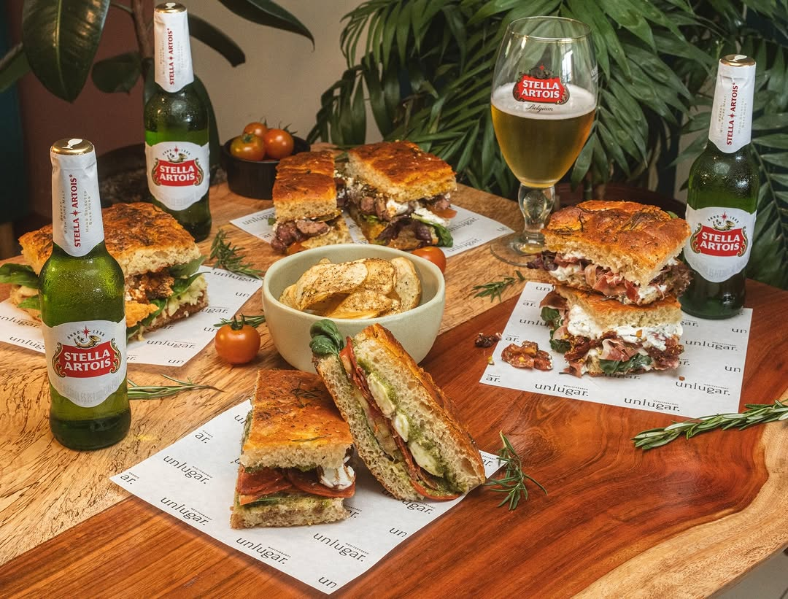
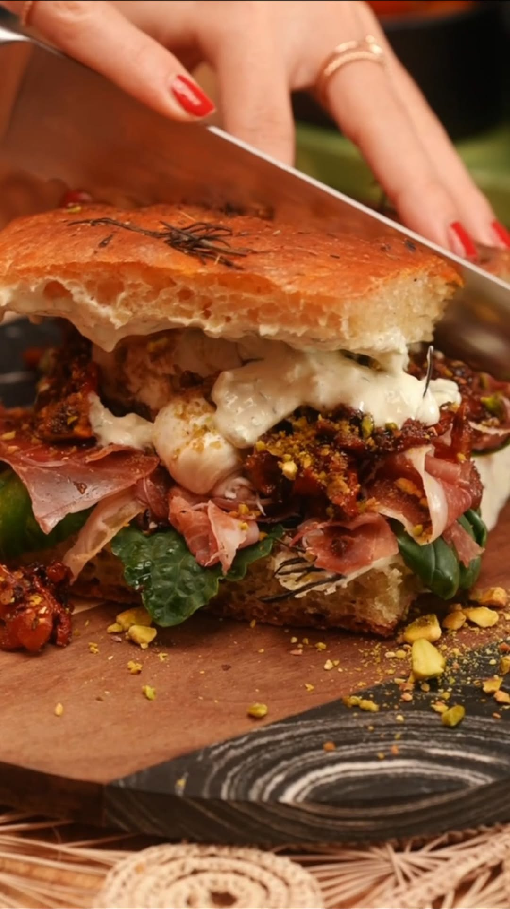
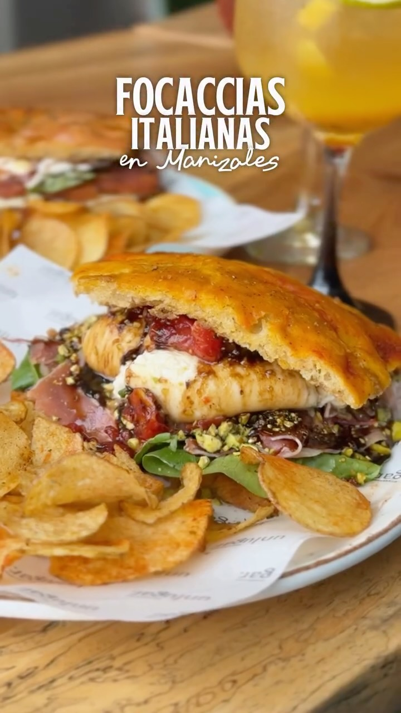
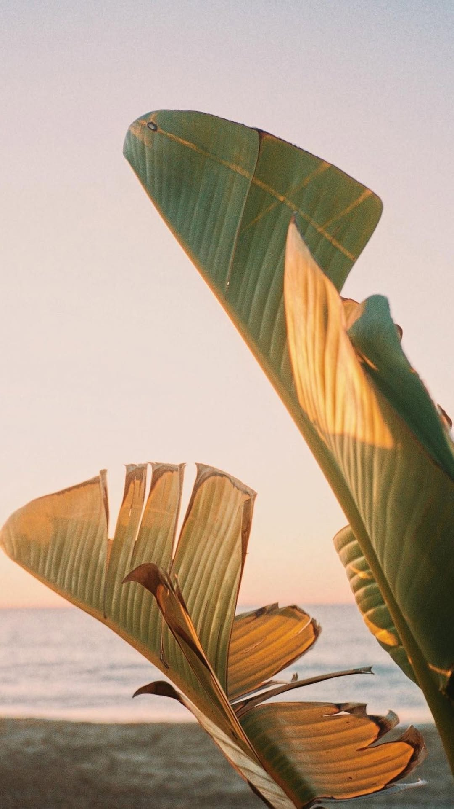

Manizales
Cra 23 #75a-55
Milan

Manizales y Pereira
Gastronomia mediterranea cocinada con productos locales, vinos, focaccias y sobremesas largas.
Una evolucion de Lugano
unlugar nace de una cocina que busca equilibrio, frescura y producto. Su propuesta une recetas mediterraneas con ingredientes locales para crear platos cercanos, intensos y pensados para compartir.
Desde Manizales y Pereira, el restaurante construye una experiencia calida: panes de fermentacion lenta, pastas, entradas para el centro de la mesa y postres que alargan la visita.

La experiencia


"La gastronomia mediterranea es reconocida mundialmente por su equilibrio y frescura."
Sedes
Cra 23 #75a-55
Milan
Calle 8b #15-54
Los Alpes
Reservas y carta